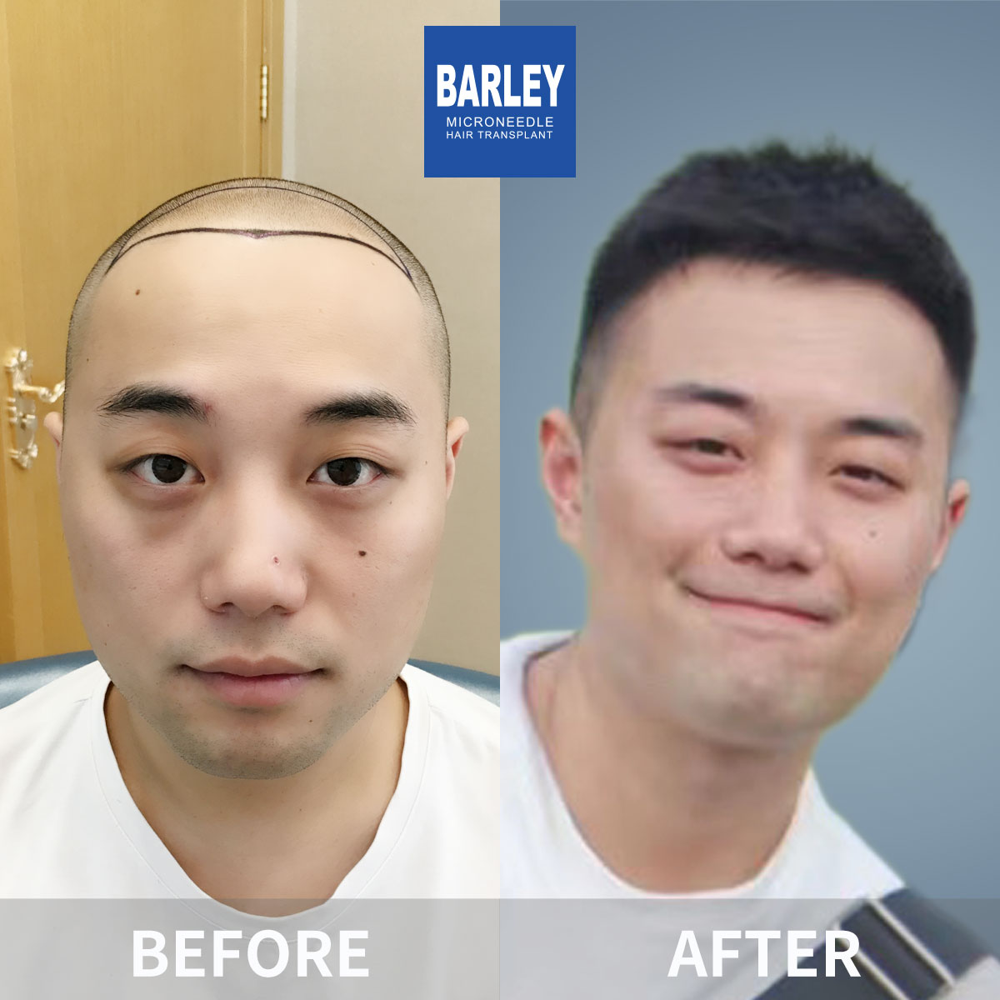
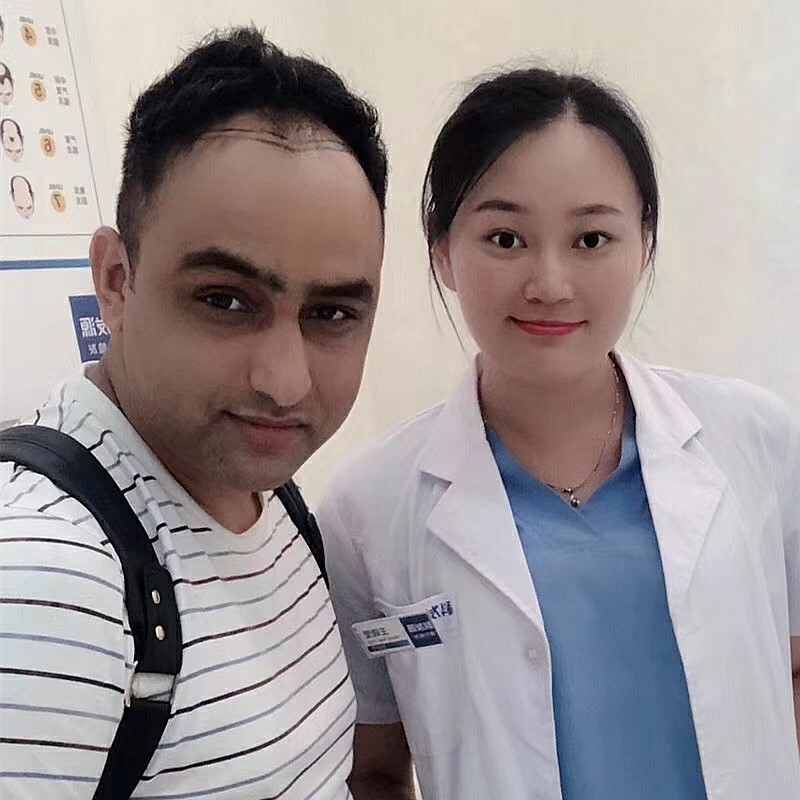

Transform visible scars into natural-looking hair growth
Scars on the scalp or face can significantly impact confidence and social interactions
Our advanced microneedle technology restores natural hair growth over scar tissue
Specialized solutions for every type of scar
Small dot scars from previous FUE procedures that need coverage for a uniform appearance
Microneedle CoverageLinear scars from traditional strip surgery that require precise follicle placement
Density RestorationScars from accidents, trauma, or surgeries with irregular shapes and sizes
Custom ShapingComplex scars from burn injuries requiring specialized techniques and multiple sessions
Advanced ProtocolFind out if scar hair transplant is right for you
Most people with scalp or facial scars are good candidates for hair transplant. During your consultation, we evaluate these key factors:

A proven 5-step process for optimal scar coverage
Comprehensive evaluation of scar tissue, blood supply, and treatment planning
Custom treatment plan with precise mapping of graft placement and density
Gentle harvesting of healthy follicles using 0.6mm microneedle technology
Precise placement with 360° rotation control for natural angle and direction
Guided healing process with specialized aftercare for optimal graft survival
Your recovery journey from procedure to final results
Mild swelling and redness around the treated area. Small scabs form around each graft. Most patients can return to light daily activities within 24-48 hours.
Scabs naturally fall off within 7-10 days. Redness gradually fades. You can gently wash the area and resume most normal activities.
Transplanted hairs may shed temporarily - this is completely normal. The follicles remain healthy under the skin and prepare for new growth.
Fine, new hairs start emerging from the scar tissue. Growth gradually thickens and becomes more visible month by month.
Transplanted hair matures and blends seamlessly with existing hair. The scar becomes effectively camouflaged with natural-looking coverage.
Trusted by thousands of patients worldwide
See the results that have earned our patients' lasting confidence





Real patients, real confidence restored

Patient proudly showing their natural-looking scar coverage outcome

Patient celebrating their remarkable new look

Patient showcasing their refreshed, natural hairline

Patient revealing their impressive before-and-after transformation

Overseas visitor delighted with their exceptional results

Patient thrilled with their beautiful new hair

Satisfied patient with our dedicated medical team

Patient demonstrating their successful restoration
Modern, comfortable clinics designed to put you at ease from the moment you arrive

Equipped with the latest technology

Relax in our comfortable waiting area

Certified sterile environment

Confidential and professional discussions

Relaxing space for post-procedure rest

Warm welcome from our team
Honest answers to the questions patients ask most
Real stories from patients who successfully covered their scars
"I had a 12cm linear FUT scar from a strip surgery I got back in 2018 in Istanbul — you could see it clearly even with my hair grown out. Barley's surgeon did a scar assessment first, checked blood supply with a Doppler, then did 650 grafts directly into the scar line. I was told survival would be lower than normal skin, but honestly at month 10 it's fully covered. I now wear my hair short and no one asks about the scar anymore."
"Burn scar from a childhood kitchen accident left a 5cm shiny bald patch on my right temple. For 22 years I combed my hair forward to hide it. The team told me burn scars need extra prep — I had three sessions of laser needling beforehand to build up blood vessels, then a transplant of 520 grafts. The first round gave about 60% coverage so I went back eight months later for a touch-up session. Now I can spike my hair up and nothing shows."
"I had a cyst removed from my scalp and the surgeon closed it badly — the resulting keloid scar was raised and completely bald. I was worried that transplanting into a keloid would make it grow worse. Barley recommended a Kenalog scar injection series first to flatten and soften it, then waited six months. At month 9 the grafts are growing through nicely and the scar lies flat. My barber hasn't even commented on it."
"Facial trauma from a cycling accident left a horizontal scar through my left eyebrow. I tried micropigmentation first but the color went blue-gray after a year. The Barley team harvested finer hairs from behind my ear — exactly the right calibre for eyebrows — and placed 210 grafts along the scar line. They even combined it with microdermabrasion on the scar itself to smooth the texture. My eyebrow is now fuller than my natural right one; I just trim it to match."
"I had recurring folliculitis on my crown that turned into a smooth, shiny atrophic scar roughly the size of my palm. The dermatologist said folliculitis scars usually have poor circulation so I was worried nothing would grow. Barley staged it: first a course of platelet-rich plasma injections over three months, then 900 grafts, then a microneedling series after month four. Survival rate wasn't 98% like normal skin — probably around 80% — but it's dense enough that you can't see the scar. Completely worth doing two sessions."
Click to copy contact information
15810155700
+86 13730143529
hairtransplant@qq.com

Everyone's hair loss journey and solution are unique due to a variety of factors. Our hair restoration experts will assist you in determining the root cause and the best solution for your hair restoration plan. If you have any questions, please ask; we are happy to assist.